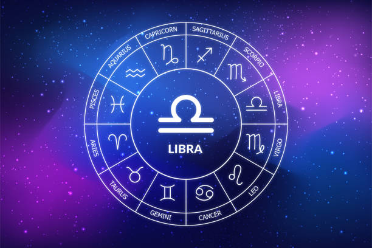
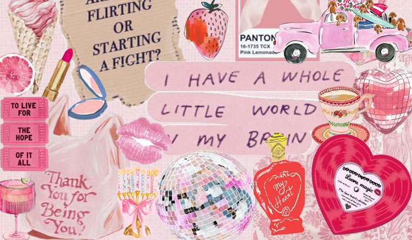
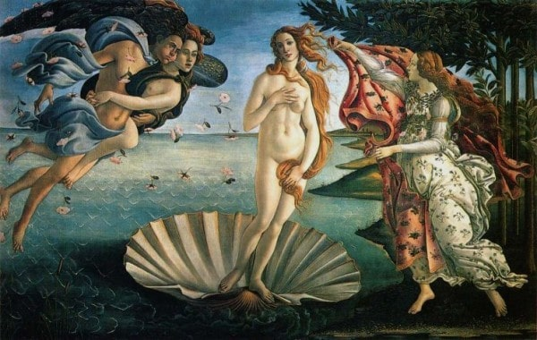

Balança
Libra (Balança)

O sétimo signo do zodíaco (23 de Setembro a 22 de Outubro), um signo de Ar, cardinal, regido por Vênus, simbolizado pela balança, e conhecido por buscar harmonia, equilíbrio, justiça, diplomacia e sociabilidade, valorizando relacionamentos e a beleza, mas podendo ser indeciso por pensar demais nas consequências para todos, focando sempre no "outro".
Características Principais:
Equilíbrio e Justiça: Busca constante por harmonia, imparcialidade e equidade em todas as situações.
Sociabilidade e Charme:
São comunicativos, charmosos e valorizam as interações sociais, sendo ótimos em parcerias.

Diplomacia:
Têm habilidade para mediar conflitos e encontrar pontos em comum.
Indecisão:
A ânsia por não magoar ninguém e considerar todos os lados pode levar à dificuldade em tomar decisões.
Apreço pela Beleza:
Regidos por Vênus, têm um olhar apurado para a estética, arte e tudo que é belo.

Elemento Ar:
Pessoas racionais, mentais e que gostam de se interessar por diversos assuntos.
Símbolo:
A Balança (♎), único signo do zodíaco representado por um objeto, representando a justiça e o equilíbrio entre dois lados.
Datas:
Nascidos entre 23 de Setembro e 22 de Outubro (as datas podem variar ligeiramente a cada ano). Em Resumo: Librianos são os "mediadores" do zodíaco, sempre tentando pesar os pratos da balança para encontrar a melhor solução e manter a paz e a beleza nas relações e no ambiente.